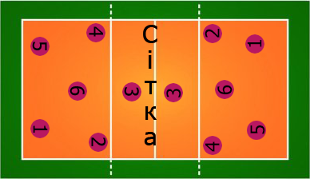
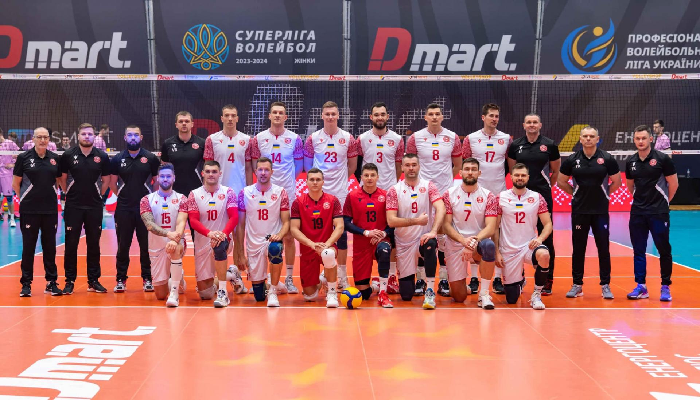
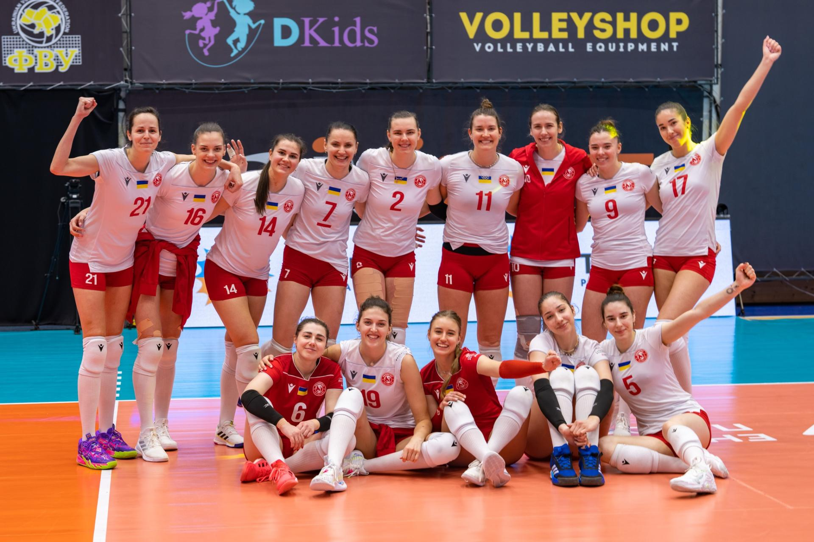

Ми — аматорська волейбольна команда з Дніпра. Тренуємось тричі на тиждень і беремо участь у змаганнях.
Основні правила гри:
Існує система підрахунку очок, яка зазвичай складається з 25 очок в кожному сеті, з можливістю продовження гри до перемоги в 3-х сетах (по необхідності).
Для кожної команди існують тактики, які включають сильні подачі, блокування, прийом м'яча, швидкий напад і захист. Гравці повинні мати високу координацію та фізичну підготовку.
Волейбол є дуже динамічною грою, що вимагає від гравців швидких реакцій і добре злагодженої командної роботи. У разі правильно виконаних технічних прийомів кожен момент гри може змінити хід матчу. Важливу роль відіграють також тренери, які допомагають команді розробляти стратегію і тактику, а також мотивують гравців до досягнення високих результатів.
Волейбольний майданчик
Наші команди:
Чоловіча команда
Жіноча команда
